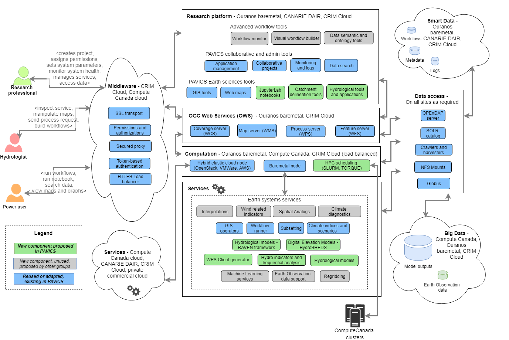

Backend¶
The Backend of PAVICS-SDI is built entirely with Free and Open Source Software. All of the backend projects (source code and documentation) are open to be inspected, built upon, or contributed to.
Birdhouse¶
PAVICS is largely built upon the many components developed as part of the Birdhouse Project.
The goal of Birdhouse is to develop an easy-to-use Web Processing Service to support remote analyses of climate data using python. The library components of Birdhouse are called ‘Birds’ while each ‘bird’ is built to perform a specific set of functions within the Birdhouse ecosystem. PAVICS components that are borrowed from within the official Birdhouse structure are the following:
- Birdhouse/Malleefowl
- Access to ESGF data nodes and THREDDS catalogs, workflow engine. Malleefowl Official Documentation
- Birdhouse/Flyingpigeon
- Climate services including indices computation, spatial analogs, weather analogs, species distribution model, subsetting and averaging, climate fact sheets, etc. Flyingpigeon Official Documentation
- Birdhouse/Hummingbird
- Climate Data Operators (CDO) and compliance-checker for netCDF files. Hummingbird Official Documentation
Note
Are there any other birds worth mentioning here?
Other Projects¶
PAVICS-SDI relies upon several other projects specialized for spatial and climate data management and presentation.
- THREDDS
- A server system for providing scientific data and metadata access through various online protocols. THREDDS Data Server Official Website and GitHub Repository
- GeoServer
- A server system built for viewing, editing, and presenting geospatial data. GeoServer Official Website and Documentation
In-House Projects¶
CRIM and Ouranos have also been actively involved in the planning and development of new and existing ‘birds’ to better perform very specific functions:
- PAVICS-DataCatalog
- A database system for storing and serving information about available climate data. PAVICS-DataCatalog GitHub Repository
- Magpie
- Authentication and authorization services using RestAPI. Magpie GitHub Repository
Todo
Ask CRIM to review architecture backend